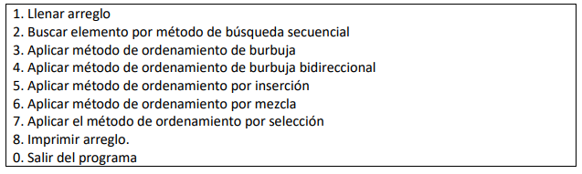

Punto 28
Escriba un programa que imprima el siguiente menú:

Tenga en cuenta para este programa los siguientes aspectos:
1. El arreglo debe ser del tamaño que el usuario del programa indique.
2. Al llenar el arreglo, no importa si este está lleno o vacío, siempre se llenará con
números aleatorios. Pero cuando ya el arreglo esté ordenado bajo cualquier método,
se preguntará al usuario si está seguro de volver a llenar el arreglo.
3. En el método de búsqueda secuencial, el usuario introducirá un valor entero
cualquiera y este deberá buscarse y mostrar el respectivo mensaje si fue encontrado
o no.
Taller de JavaScript
GC-F -005 V. 01
4. Cada opción del menú deberá escribirse en una función.